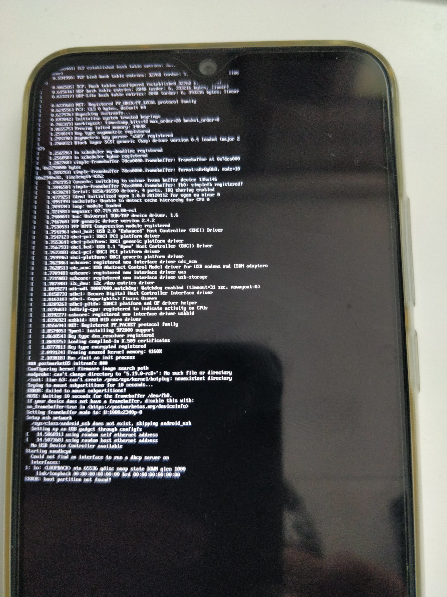

Volla Phone (volla-yggdrasil)
Jump to navigation
Jump to search
|
 Booted early mainline kernel v6.1-rc5 with Sxmo! | |
| Manufacturer | Volla |
|---|---|
| Name | Phone |
| Codename | volla-yggdrasil |
| Released | 2020 |
| Category | testing |
| Original software | Android 9 / Ubuntu Touch on Linux 4.4 |
| postmarketOS kernel | 6.1_rc5 |
| Hardware | |
| Chipset | MediaTek Helio P23 (MT6763V) |
| CPU | Octa-core Cortex-A53 @ 2.0 GHz |
| GPU | ARM Mali-G71 MP2 (Bifrost) |
| Display | 1080x2340 6,3" |
| Storage | 64 GB eMMC |
| Memory | 4 GB |
| Architecture | aarch64 |
| Type | handset |
{kind=link}
| USB Networking |
Works
|
|---|---|
| Flashing |
Works
|
| Touchscreen |
Broken
|
| Display |
Partial
|
| WiFi |
Broken
|
| FDE | |
| Mainline |
Works
|
| Battery |
Broken
|
| 3D Acceleration |
Broken
|
| Audio |
Broken
|
| Bluetooth |
Broken
|
| Camera |
Broken
|
| GPS |
Broken
|
| Mobile data |
Broken
|
| SMS |
Broken
|
| Calls |
Broken
|
| USB OTG | |
| NFC |
Broken
|
| Accelerometer |
Broken
|
|---|---|
| Magnetometer |
Broken
|
| Ambient Light |
Broken
|
| Proximity |
Broken
|
| Hall Effect |
Broken
|
| Barometer |
Unavailable
|
| Power Sensor |
Unavailable
|
| Camera Flash | |
|---|---|
| Keyboard |
Unavailable
|
| Touchpad |
Unavailable
|
| USB-A |
Unavailable
|
| HDMI/DP |
Unavailable
|
| Ir TX |
Unavailable
|
| Ir RX | |
| Stylus | |
| Haptics | |
| Ethernet | |
| FOSS bootloader |
Broken
|
|
This device is based on the Helio P23. See the SoC page for common tips, guides and troubleshooting steps |
How to enter flash mode
- Fastboot: Power on the device with both Power and Volume Up buttons held down. Then select Fastboot by pressing Volume Up and confirm with Volume Down.
- Recovery: Do the same as for Fastboot, but select the Recovery option in the menu instead.
- MediaTek Preloader: The preloader triggers automatically everytime the phone turns on or reboots.
Installation
Follow the usual flashing guide via pmbootstrap.
NOTE: fastboot booting is broken on this device, so e.g. pmbootstrap flasher boot won't work and as such kernels will always have to be flashed to the boot partition of the device. |
Mainline kernel
There is some early mainline support being worked on for the MT6763 chipset; see the MediaTek Helio P23 SoC page and Volla Phone (volla-yggdrasil)/Hacking for more details.
Please note that as eMMC internal storage access isn't yet working you'll have to Netboot a postmarketOS rootfs over USB RNDIS!
As pmbootstrap flasher flash_dtbo is a pre-requisite to booting mainline please backup your existing dtbo partition contents to be able to boot downstream kernels/recovery images again with e.g. mtk r dtbo dtbo-backup.img using mtkclient!
| NOTE: Currently mainline ONLY boots with the (Android 9) firmware & bootloader that Ubuntu Touch also uses, so flash that beforehand through the UBports installer! Needs investigation what changes are required to boot with Android 10 bootloader... |
Patches of interest
- Himax HX83112b touchscreen driver (also used on the Fairphone 3 (fairphone-fp3)!): https://patchwork.kernel.org/project/linux-input/cover/20221107105604.26541-1-job@noorman.info/, will in v6.2-rc1 :)
Partition layout
volla-yggdrasil:~# fdisk -l -o Device,Start,End,Sectors,Size,Name /dev/mmcblk0
Disk /dev/mmcblk0: 58.24 GiB, 62537072640 bytes, 122142720 sectors Units: sectors of 1 * 512 = 512 bytes Sector size (logical/physical): 512 bytes / 512 bytes I/O size (minimum/optimal): 512 bytes / 512 bytes Disklabel type: gpt Disk identifier: 00000000-0000-0000-0000-000000000000 Device Start End Sectors Size Name /dev/mmcblk0p1 64 6207 6144 3M proinfo /dev/mmcblk0p2 6208 8255 2048 1M boot_para /dev/mmcblk0p3 8256 73791 65536 32M recovery /dev/mmcblk0p4 73792 74815 1024 512K para /dev/mmcblk0p5 74816 115775 40960 20M expdb /dev/mmcblk0p6 115776 117823 2048 1M frp /dev/mmcblk0p7 117824 183359 65536 32M nvcfg /dev/mmcblk0p8 183360 314431 131072 64M nvdata /dev/mmcblk0p9 314432 379967 65536 32M metadata /dev/mmcblk0p10 379968 396351 16384 8M protect1 /dev/mmcblk0p11 396352 425983 29632 14.5M protect2 /dev/mmcblk0p12 425984 442367 16384 8M seccfg /dev/mmcblk0p13 442368 540671 98304 48M persist /dev/mmcblk0p14 540672 544767 4096 2M sec1 /dev/mmcblk0p15 544768 675839 131072 64M md1img /dev/mmcblk0p16 675840 708607 32768 16M md1dsp /dev/mmcblk0p17 708608 710655 2048 1M spmfw /dev/mmcblk0p18 710656 712703 2048 1M sspm_1 /dev/mmcblk0p19 712704 714751 2048 1M sspm_2 /dev/mmcblk0p20 714752 747519 32768 16M gz1 /dev/mmcblk0p21 747520 780287 32768 16M gz2 /dev/mmcblk0p22 780288 911359 131072 64M nvram /dev/mmcblk0p23 911360 913407 2048 1M lk /dev/mmcblk0p24 913408 915455 2048 1M lk2 /dev/mmcblk0p25 915456 980991 65536 32M boot /dev/mmcblk0p26 980992 997375 16384 8M logo /dev/mmcblk0p27 997376 1013759 16384 8M dtbo /dev/mmcblk0p28 1013760 1023999 10240 5M tee1 /dev/mmcblk0p29 1024000 1048575 24576 12M tee2 /dev/mmcblk0p30 1048576 2686975 1638400 800M vendor /dev/mmcblk0p31 2686976 10027007 7340032 3.5G system /dev/mmcblk0p32 10027008 10911743 884736 432M cache /dev/mmcblk0p33 10911744 122109918 111198175 53G userdata /dev/mmcblk0p34 122109919 122142686 32768 16M flashinfo
Community Info
postmarketOS users that own the device
- Comcloudway (Notes: running /e/OS)
- Cvbnm90i
- Danct12
- Deathmist (Notes: Working on mainlining)
- Eriki73 (Notes: Working on mainlining)
Maintainer(s)
- No one currently; feel free to pick up the remains under the See also section!